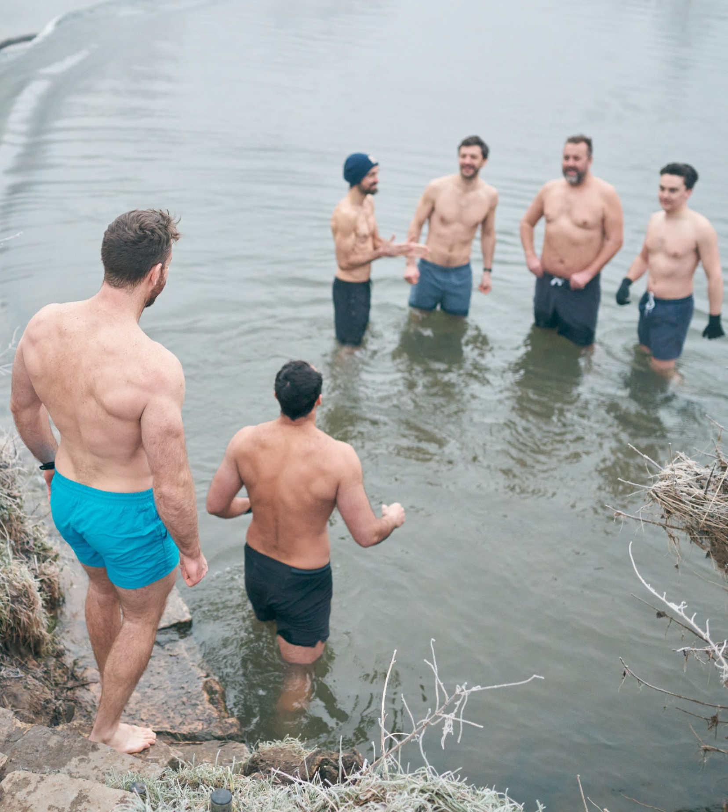
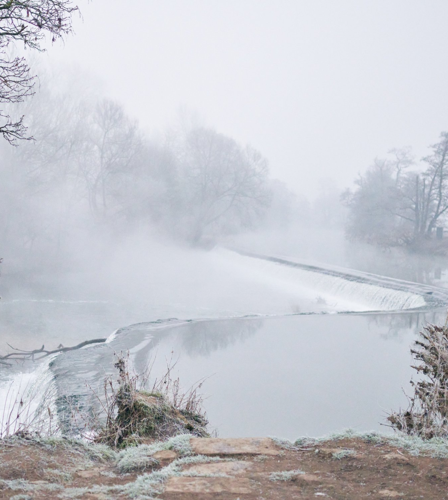

Cold immersion
IceBreakers is a community of men supporting men, we love and value the benefits of cold water but we are not experts. There is no pressure to enter and you do so at your own risk. We use breathwork, movement and other techniques to prepare for the experience and warm up afterwards

We are all unique
Every person is different and so do ensure you seek the relevant professional and medical advice before engaging with any experience with extremes of cold involved. For those with underlying health conditions this is even more important
Forthcoming Events
Additionally, we hold regular dips at Warleigh Weir in Bath on Wednesdays at 6:30AM and Sundays at 8:00AM
Full Moon, March 7th
19:30 - 21:25 @ Warleigh Weir
Join us for an April full moon dip. Bring something warm to drink, a folding chair and we’ll get the fire started.
Full Moon, April 6th
19:30 - 21:25 @ Warleigh Weir
Join us for an April full moon dip. Bring something warm to drink, a folding chair and we’ll get the fire started.
Spring Retreat, April 23rd
£495 per person (deposit £150)
At Campwell Farm. What to expect: Healing breathwork, Ice bath experience, Fire building workshop, Digital + time detox
“Nothing is softer or more flexible than water, yet nothing can resist it.” — Lao Yzu